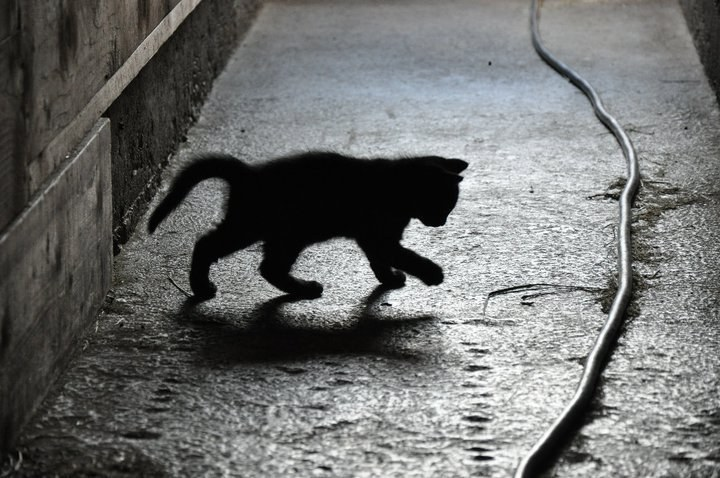
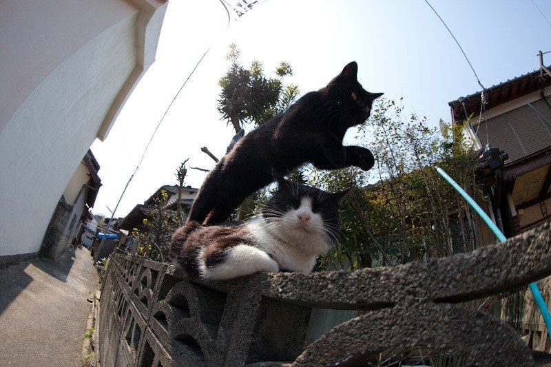
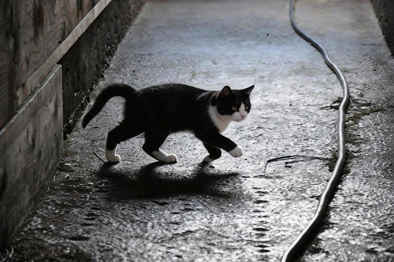
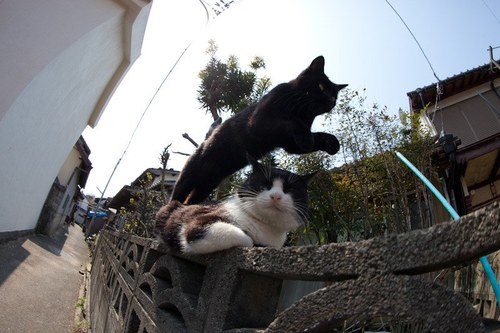
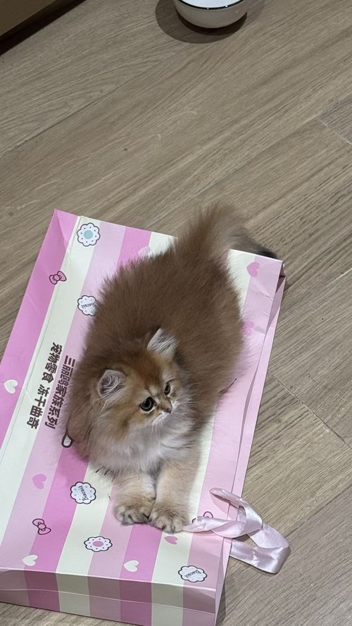

01
案例 · Static image
凌晨的巷子，
换一只新猫
一张剪影猫在夜晚巷子里走路的照片。主角换成另一只看起来完全不同的花猫——同样的光影、同样的姿势、地面的水渍反光、墙上的电线，都原样保留。
只是走路的那位换了。



昨晚我花了两小时，把我家金渐层小奶猫做成了那只挤眉弄眼的橘猫 meme。
效果比预期好——眼睛是我家猫的眼睛，长毛还是我家猫的长毛，脸还是那张圆圆的幼猫脸。但它确实在挤眉弄眼。
这个 repo 就是那两小时的产物。
一张剪影猫在夜晚巷子里走路的照片。主角换成另一只看起来完全不同的花猫——同样的光影、同样的姿势、地面的水渍反光、墙上的电线，都原样保留。
只是走路的那位换了。



静态图里看不出来的脚步节奏、尾巴摆动、影子的起伏——换成新猫之后动起来，气质完全不一样。
这是 v0.2 才支持的。靠的是即梦的 multimodal2video 把「首帧 / 你的猫 / 原 GIF 的运动」三路引用一次性融合。

这是整个项目最棘手的一个 case——源 meme 是一只橘猫的脸部特写，在做极其精细的挤眼鼓脸微表情。没有"场景"，没有"动作幅度"，只有一张脸和一个 vibes。
要求模型保留这个微表情，同时把猫换成一只完全不同品种的金色长毛小奶猫。
这一版跑了 7 次实验、3 次彻底失败，才找到 --description 这个关键开关。详细折腾记录在 v0.2.2 的 commit message 里。

用 ffmpeg 把输入 GIF 提取首帧（静态构图参考），同时转成 h264 mp4（motion reference，给动作信号）。两者都按 dreamina multimodal2video 的硬约束做尺寸归一化。
把 [你的猫照片, 首帧, motion mp4] 三个引用一次性送到 dreamina 的 Seedance 2.0 Fast 模型。用户的 --description 作为 prompt 锁定品种级特征。
下载生成的 mp4（带 IncompleteRead 重试保护），用 ffmpeg 的 palette filter 做 2-pass 优化转回 GIF。全流程 3-5 分钟。
--description。v0.3 计划用 VLM 自动生成这一步。
需要先装即梦 CLI 并登录，然后用 pip 装 mycat-meme。ffmpeg 也是必需的（brew install ffmpeg）。
image2image · 约 1 分钟 · 10 积分
multimodal2video · 约 5 分钟 · 20 积分
--description flag · 尺寸归一化 · IncompleteRead 重试
接 Claude vision 或豆包 · 免去手写 --description
微信登录 · 微信支付 · 精选 meme 库 · 中文圈运营